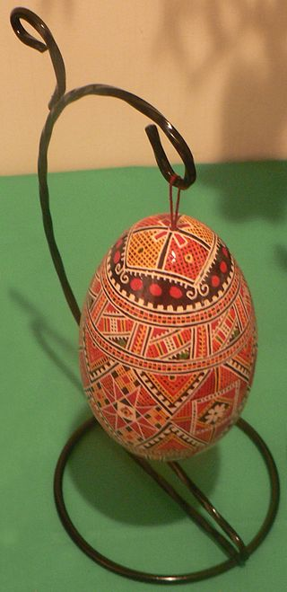
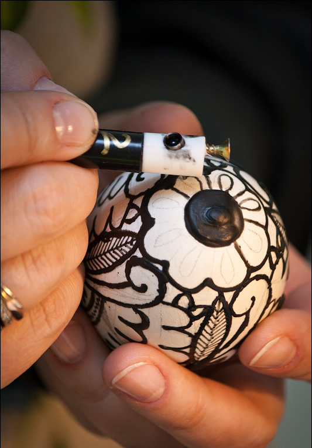
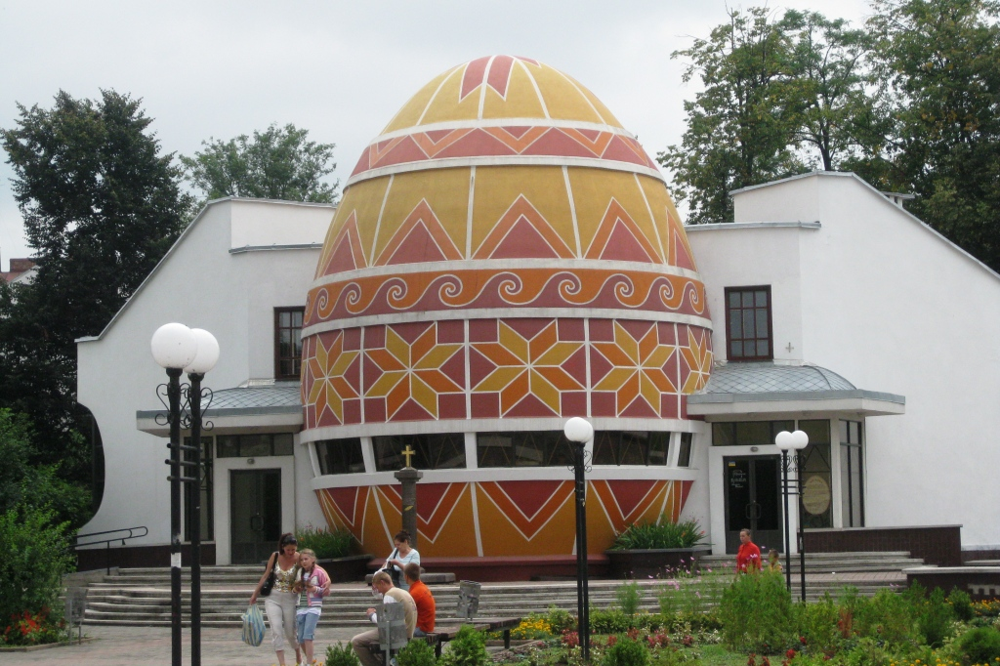
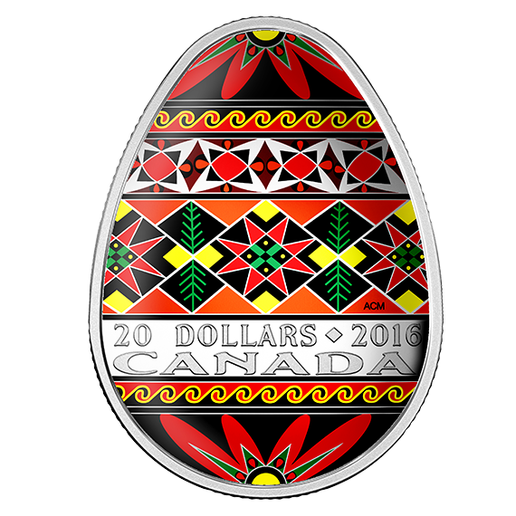

-
Історія
 Розписування яєць до Великодня – традиція не нова. Радісно, що пройшовши через віки, вона зуміла зберегти свою самобутність. Цікаво й те, що методики розписування писанок, їх символіка і кольорова гама різняться не тільки від країни до країни, а й від міста до міста. А отже, в кожній місцевості вони особливі!
Пи́санка — яйце, декороване традиційними символами, які пишуться за допомогою воску й барвників. Цей вид мистецтва поширений у багатьох народів світу. З писанками і фарбованими яйцями (крашанками) пов'язано безліч легенд, повір'їв, переказів, звичаїв, традицій, обрядів, які виникли ще в язичницьку добу, видозмінювалися, а з прийняттям християнства набули нової якості — пов'язаної з дійством освячення паски під час найголовнішого християнського свята — Великодня. Звідси і їхня назва — «великодні яйця».
В уявленнях багатьох народів яйце втілювало джерело життя і всього всесвіту. У стародавніх персів, індіанців, візантійців, а також у древніх греків та римлян вважалося, що всесвіт виник з яйця. Стародавні індо-іранські легенди теж це підтверджують. Давніми художниками використовувались саморобні фарби, які виготовлялись з кори та плодів дерев, трав і квітів. Природні фарби не дуже тривкі, тому з часом вицвітають. А щоб побачити, якими були древні писанки спочатку, користуються мікроскопом: у порах шкаралупи зберігається початковий колір.
-
Символіка писанки
Писанка — символ Сонця; життя, його безсмертя; любові і краси; весняного відродження; добра, щастя, радості. У міфах багатьох народів світу саме яйце є світотворчим початком. У слов'ян-язичників, на думку С. Килимника, писанки існували вже за часів антів — наших прародичів /ІІІ — VIII ст. н. е. і були символом сонячного культу. Птахи — це вісники весняного воскресіння, Сонця, а їх яєчка — емблема сонця — життя, народження.
«Яйце птаха взагалі, — писав С. Килимник, — це зародень життя, символ бога сонця; воно в давнину символізувало — добро, радість, щастя, любов, достаток, успіх, прихилення добрих сил, захист людини від лихих сил».
Таблиця символіки Знак Означення Сонце Нашим пращурам доводилося виживати в складних умовах: важко було пережити холодну зиму, дочекатися нового врожаю. Настання довгоочікуваної весни сприймалося як народження нового сонця, торжество життя, тепла, світла над темрявою. Хрест Один із сонячних знаків, символ Усесвіту, чотирьох сторін світу, чотирьох вітрів, чотирьох пір року. Походить від схематичного зображення птаха, адже за прадавніх часів сонце уявлялося птахом, який летить у небі Спіраль Символ плодючості, знак володаря, плину часу Триріг Один із найдавніших символів сонця, а також знак священного числа «три» Зірка Символізує сонце і вранішню зорю. Містить у собі косий хрест, прямий хрест, а також лівобічну та правобічну свастики (сварги) Птах Символ зародження життя, родючості, достатку Гілка Символ родючості, щорічного весняного відродження пагонів; символ безкінечного життя Квіти Означають радість, красу, дітей Півень Провісник дня, сторож добра проти зла — є символом світла, яке побороло темряву -
Технологія виготовлення писанок
Українська писанка є шедевром декоративно-ужиткового мистецтва. Виготовляють писанки окремі люди, оскільки ця праця клопітка, вимагає терпіння, зосередженості, а також знань символів, які зображаються на пташиних яйцях.
Писанки усієї України не схожі між собою, вони різняться нанесеними елементами і символами. Найскладніша для розуміння писанка Гуцульщини, яка насичена різною інформацією про життя і вірування людей. Проте значення кольорової гами та символіка подекуди збігається в різних регіонах України, оскільки всі українці бажали для себе доброї долі, миру, спокою, здоров'я, доброго урожаю.
-
Звичаєвість, пов'язана з писанкою
Писанку за всіх часів дарували на знак перемир’я, побажання здоров’я, краси, сили, врожаю. Застосовували як запобіжний засіб від стихійного лиха, пожежі, грому, для лікування різних хвороб, від переляку, наговору. Писанку качали по зелу й закопували в землю на ниві, щоб хліб колосився і не поліг. Їх підкладали під вулик, щоб роїлися бджоли.
-
Вшанування
 У канадському місті Веґревілі, провінції Альберта, велику частину населення якого становлять канадські українці, за проектом художника Павла Цимбалюка створено дванадцятиметровий пам'ятник українській писанці, що за розміром дорівнює риповерховому будинкові. Пасхальне яйце з алюмінію створене в 1974 році. Щороку в липні у цьому містечку відбувається Український фестиваль писанки.
У канадському місті Веґревілі, провінції Альберта, велику частину населення якого становлять канадські українці, за проектом художника Павла Цимбалюка створено дванадцятиметровий пам'ятник українській писанці, що за розміром дорівнює риповерховому будинкові. Пасхальне яйце з алюмінію створене в 1974 році. Щороку в липні у цьому містечку відбувається Український фестиваль писанки. Єдиний у світі музей писанки збудовано в місті Коломия. Частиною музею є пам'ятник писанці, висота якого сягає 13,5 метрів. Експозиція Музею налічує понад 12 000 писанок і декоративних яєць із різних регіонів України та країн світу. У колекції писанкового розпису зберігаються традиції ще дохристиянських часів. Серед експонатів музею є також писанки з підписами відомих політичних діячів України.
16 квітня 2009 року Національний банк України ввів у обіг дві пам’ятні монети «Українська писанка» номіналом 20 гривень зі срібла та «Українська писанка» номіналом 5 гривень із нейзильберу.